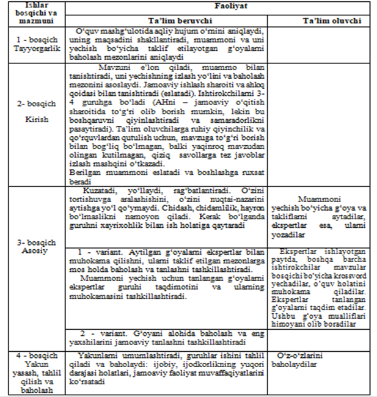

3.4 Avtomaktab o‘qituvchilarining pedagogik mahoratini oshirishda “AQLIY HUJUM” usulidan foydalanish
Aqliy hujum (breynstroming-aqllar to‘zoni) - amaliy yoki ilmiy muammolar yechish g‘oyasini ta’lim oluvchilar o‘zlarini g‘oyalarini aytishga botina olmaydilar. O‘z takliflarining xatoligi va ta’lim beruvchining salbiy munosabatidan, boshqa ishtirokchilarning yo‘q qilib yuboruvchi tanqidi va kulgisidan asosli qo‘rqadilar.
Aqliy hujum qoidasi: Hech qanday birga baholash va tanqidga yo‘l qo‘yilmaydi! Taklif etilayotgan g‘oyani baholashga shoshma, agarda u hattoki ajoyib va g‘aroyib bo‘lsa ham – hamma narsa mumkin.
Tanqid qilma-hamma aytilgan g‘oyalar qimmatli teng kuchlidir.
O‘rtaga chiquvchini bo‘lma!
Turtki berishdan o‘zingni ushla!
Maqsad miqdor hisoblanadi!
Qancha ko‘p g‘oyalar jamoaviy yuzaga keltirish. Ishtirokchilar aqliy hujum vaqtida murakkab muammoni hal etishga harakat qiladilar: ularni tanqid qilishga yo‘l qo‘ymay uni hal etishning ko‘proq shaxsiy g‘oyalarini yuzaga keltiradilar, so‘ngra ko‘proq oqilona, samrali, maqbul va boshqa g‘oyalarni ajratadilar, ularni muhokama qiladilar va rivojlantiradilar, ularni isbotlash yoki qaytarish imkoniyatlarini baholaydilar.
Bu usul hamma vazifalarni bajaradi, lekin uning asosiy vazifasi - ta’lim oluvchilarni o‘quv-bilish faoliyatini faollashtirish, ularni muammoni mustaqil tushunish va yechishga qiziqtirish va ularda muomala madaniyati, fikr almashinish malakalarini rivojlantirishi, tashqi ta’sir ostida fikrlashdan ozod bo‘lish va ijodiy topshiriqni yechishda birlamchi yo‘l fikrlarini yengib o‘tishni tarbiyalaydi.
An’anaviy ta’limda vazifani yechish vaqtida ko‘pginaaytilsa, undan ham yaxshi: yangi va qimmatli g‘oyalarni paydo bo‘lishi uchun ko‘p imkoniyatdir. Agarda g‘oyalar qaytarilsa, hafa bo‘lma va hijolat chekma. Tasavvuringni «jo‘sh urishiga» ruxsat ber!
“Aqliy hujum” metodining afzalliklari:
• natijalar baholanmasligi ta’lim oluvchilarda turli fikr-g‘oyalarning shakllanishiga olib keladi;
• ta’lim oluvchilarning barchasi ishtirok etadi;
• fikr-g‘oyalar vizuallashtirilib boriladi;
• ta’lim oluvchilarning boshlang‘ich bilimlarini tekshirib ko‘rish imkoniyati ortadi;
• ta’lim oluvchilarda mavzuga qiziqish uyg‘otadi.
“Aqliy hujum” biror muammo bo‘yicha ta’lim oluvchilar tomonidan bildirilgan erkin fikr-mulohazalarni to‘plab, ular orqali natijada ma’lum bir echimga kelinadigan metoddir. “Aqliy hujum” metodining yozma va og‘zaki shakllari mavjud. Og‘zaki shaklida ta’lim beruvchi tomonidan berilgan savolga ta’lim oluvchilarning har biri o‘z fikrini og‘zaki bildiradi. Ta’lim oluvchilar o‘z javoblarini aniq va qisqa tarzda bayon etadilar.
Aqliy hujum qoidasi: Hech qanday birga baholash va tanqidga yo‘l qo‘yilmaydi! Taklif etilayotgan g‘oyani baholashga shoshma, agarda u hattoki ajoyib va g‘aroyib bo‘lsa ham – hamma narsa mumkin.
Tanqid qilma-hamma aytilgan g‘oyalar qimmatli teng kuchlidir.
O‘rtaga chiquvchini bo‘lma!
Turtki berishdan o‘zingni ushla!
Maqsad miqdor hisoblanadi!
Qancha ko‘p g‘oyalar jamoaviy yuzaga keltirish. Ishtirokchilar aqliy hujum vaqtida murakkab muammoni hal etishga harakat qiladilar: ularni tanqid qilishga yo‘l qo‘ymay uni hal etishning ko‘proq shaxsiy g‘oyalarini yuzaga keltiradilar, so‘ngra ko‘proq oqilona, samrali, maqbul va boshqa g‘oyalarni ajratadilar, ularni muhokama qiladilar va rivojlantiradilar, ularni isbotlash yoki qaytarish imkoniyatlarini baholaydilar.
Bu usul hamma vazifalarni bajaradi, lekin uning asosiy vazifasi - ta’lim oluvchilarni o‘quv-bilish faoliyatini faollashtirish, ularni muammoni mustaqil tushunish va yechishga qiziqtirish va ularda muomala madaniyati, fikr almashinish malakalarini rivojlantirishi, tashqi ta’sir ostida fikrlashdan ozod bo‘lish va ijodiy topshiriqni yechishda birlamchi yo‘l fikrlarini yengib o‘tishni tarbiyalaydi.
An’anaviy ta’limda vazifani yechish vaqtida ko‘pginaaytilsa, undan ham yaxshi: yangi va qimmatli g‘oyalarni paydo bo‘lishi uchun ko‘p imkoniyatdir. Agarda g‘oyalar qaytarilsa, hafa bo‘lma va hijolat chekma. Tasavvuringni «jo‘sh urishiga» ruxsat ber!
-
Aqliy hujum usuli qo‘llanilgan o‘quv mashg‘ulotining texnologik xaritasi

“Aqliy hujum” metodining afzalliklari:
• natijalar baholanmasligi ta’lim oluvchilarda turli fikr-g‘oyalarning shakllanishiga olib keladi;
• ta’lim oluvchilarning barchasi ishtirok etadi;
• fikr-g‘oyalar vizuallashtirilib boriladi;
• ta’lim oluvchilarning boshlang‘ich bilimlarini tekshirib ko‘rish imkoniyati ortadi;
• ta’lim oluvchilarda mavzuga qiziqish uyg‘otadi.
“Aqliy hujum” biror muammo bo‘yicha ta’lim oluvchilar tomonidan bildirilgan erkin fikr-mulohazalarni to‘plab, ular orqali natijada ma’lum bir echimga kelinadigan metoddir. “Aqliy hujum” metodining yozma va og‘zaki shakllari mavjud. Og‘zaki shaklida ta’lim beruvchi tomonidan berilgan savolga ta’lim oluvchilarning har biri o‘z fikrini og‘zaki bildiradi. Ta’lim oluvchilar o‘z javoblarini aniq va qisqa tarzda bayon etadilar.